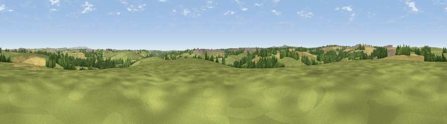

Viewpoint near Langarth
#35878 in England · top 72% of its area beats it · near LangarthWhere it is
The exact computed spot (SW 78925 47125). Click the marker for map links.
The view, rendered

A 360° render of this exact spot computed from the terrain model, tree cover and land cover — summer colours, afternoon light, calibrated against photographs of famous viewpoints. Real trees, hedges and buildings will differ in detail.
The panorama
Grey silhouette: terrain skyline in each direction (720 bearings, Earth curvature and refraction included). Dashed green: skyline with trees (+15 m) and buildings (+8 m) as obstacles. Blue strip: how far the ground is visible on each bearing.
Where the view opens
Wedge length = distance to the farthest visible ground on that bearing (vegetation-aware). Rings at 10, 25 and 50 km.
What fills the view
54% grassland · 27% cropland · 14% woodland · 4% built-up
Angular shares of the visible panorama (visual magnitude), not map area. Landscape diversity 0.48 (0–1 Shannon).
Key numbers
More beautiful places nearby
The staircase of upgrades: each row has a higher view potential than everything closer. Driving times are estimates from straight-line distance, calibrated against real road routing — check an actual route before setting out.
| Place | Direction | Drive | Score |
|---|---|---|---|
| Viewpoint near Shortlanesend | ESE · 2 km | ~5 min | 41.1 |
| Viewpoint near Shortlanesend | NNE · 3 km | ~7 min | 46.4 |
| Viewpoint near Blackwater | W · 4 km | ~9 min | 48.2 |
| Viewpoint near Goonbell | W · 6 km | ~13 min | 58.9 |
| Viewpoint near Zelah | NNE · 8 km | ~16 min | 66.5 |
| Viewpoint near Perrancoombe | NW · 8 km | ~16 min | 71.3 |
| St Agnes Beacon | WNW · 8 km | ~17 min | 86.1 |
| Viewpoint near Foxhole | ENE · 20 km | ~34 min | 86.4 |
50.28258, -5.10451 · source: screening · position refined by local search. Computed location — check access rights before visiting.